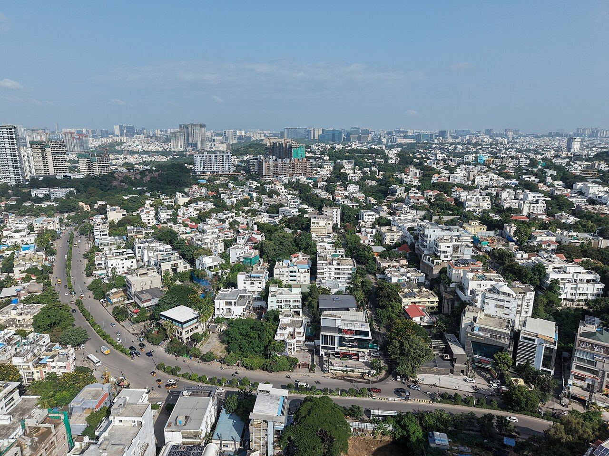

West zone · Hyderabad
Film Nagar
Film Nagar ranks 22 of 88 Hyderabad localities on 5 of the 21 measures we plan. Its strongest measure is healthcare (97/100) and its weakest is green cover (50/100).


The five measures
| Measure | What we found | Score | Counted |
|---|---|---|---|
| Schools | 19 schools and preschools | 70/100 | within 1 km |
| Healthcare | 273 hospitals and clinics | 97/100 | within 2 km |
| Daily needs | 39 groceries, pharmacies, banks and ATMs | 76/100 | within 1 km |
| Metro access | Nearest operating metro: Jubilee Hills Checkpost, 1.6 km. Nearest MMTS station: Borabanda, 5.0 km | 76/100 | straight-line distance |
| Green cover | 30% of land under trees, shrubs, grass or wetland; 68% built up | 50/100 | within 2 km |
Counts show how many places are mapped in open data, not how good they are, and outer areas are mapped less fully. Scores are relative: each measure is compared with the other 87 localities, and the early score is the average of the five with equal weights (provisional).
Nearby localities
Not scored yet
16 of the 21 measures show "not enough data" because no open, official source covers them at locality level yet.
- Water: No locality-level supply data is published. Groundwater depth would only be a proxy.
- Power: No locality-level outage data is published.
- Traffic: No free source of travel times we can reuse.
- Safety: Police figures are not published by locality.
- Flooding: No official, machine-readable list of flood spots.
- Cost of living: No source found.
- Price & yield: No official locality prices, and we don't use property portals.
- Noise: Official noise stations cover too few areas.
- Construction dust: Only press reports and notices, nothing structured.
- Legal & title risk: No final lake-boundary notification yet, and court cases are ongoing.
- Apartment quality: RERA shows registration status only.
- Internet & mobile: Open speed data allows non-commercial use only. Not added yet.
- Jobs nearby: Only office counts and broker reports so far. Not added yet.
- Air quality: Too few official stations: most localities have none nearby.
- Sewage & lakes: Official reports cover lakes, not localities.
- Future infrastructure: Nothing is approved yet (Metro Phase 2, Regional Ring Road).
Sources
Places: Overture Maps release of 18 Nov 2026 (CDLA Permissive 2.0), retrieved 21 Nov 2026. Stations: © OpenStreetMap contributors (ODbL), as carried in the same Overture release of 18 Nov 2026, retrieved 21 Nov 2026. Green cover: ESA WorldCover 2021, 10 m satellite land cover (CC BY 4.0), retrieved 21 Nov 2026. Places listed with low confidence are left out.
Centre point: 17.4141° N, 78.4105° E. The circles around it are not an official ward boundary; official boundaries for the new 300 wards are not published yet.